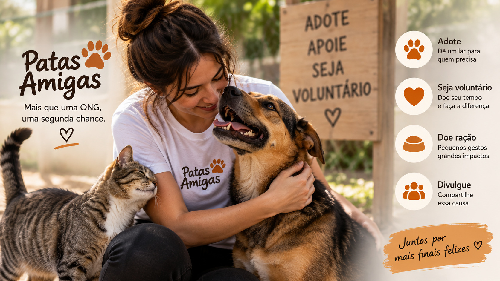

Resgate de animais ATIVO
Realizamos o resgate de animais abandonados e buscamos oferecer os cuidados necessários para sua recuperação.

Realizamos o resgate de animais abandonados e buscamos oferecer os cuidados necessários para sua recuperação.
Buscamos novos lares para cães e gatos resgatados, incentivando sempre a adoção responsável.
Os voluntários podem ajudar nos cuidados com os animais, eventos de adoção e outras atividades realizadas pela ONG.
As doações ajudam na compra de alimentos, medicamentos e outros itens necessários para os animais resgatados.